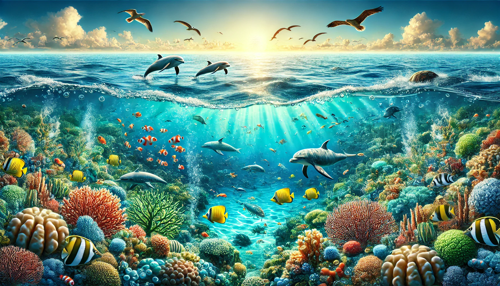

Carte de conscience planétaire
Rapport scientifique — Décembre 2025
À l'heure actuelle, la santé de nos océans est gravement compromise. Si nous maintenons la trajectoire actuelle, nous nous dirigeons vers un effondrement écologique total d'ici 2050. Les mécanismes en jeu concernent les cycles biogéochimiques océaniques, essentiels à la vie telle que nous la connaissons.
Les travaux de Joe Roman et James McCarthy ont mis en lumière le concept de la "pompe à baleine" : les grands mammifères marins agissent comme des pompes biologiques qui remontent les nutriments des profondeurs vers la surface via leurs déjections. Ces nutriments — fer, azote — sont vitaux pour le phytoplancton, base de toute la chaîne alimentaire marine. La pêche industrielle, en dépeuplant les océans de ces mammifères, a brisé ce cycle vital. Sans ces "pompes", le phytoplancton meurt de faim, entraînant un effondrement mécanique de la fertilité océanique.
En parallèle, l'agriculture intensive — notamment pour la production de viande — déverse des excès d'azote dans les océans, créant une eutrophisation massive. Cet excès d'azote provoque une prolifération excessive d'algues qui, en se décomposant, consomment l'oxygène disponible : c'est l'anoxie. Dans ces zones anoxiques, les bactéries sulfato-réductrices prolifèrent et libèrent du sulfure d'hydrogène (H₂S), un gaz hautement toxique qui tue toute forme de vie aérobie — poissons, crustacés. Les océans deviennent chimiquement hostiles à la vie.
Face à ces conditions, un changement de régime s'opère : un océan vidé de ses prédateurs et pauvre en oxygène ne reste pas vide. Il est envahi par des organismes gélatineux (méduses) et des tapis microbiens. Nous assistons à une régression vers des écosystèmes primitifs similaires au Précambrien.
Le phytoplancton produit entre 50 à 80% de l'oxygène que nous respirons. Si la pompe à baleine s'arrête, c'est la production d'oxygène qui s'effondre.
Si nous ne changeons pas radicalement notre rapport aux océans, 2050 marquera la transition vers un océan stratifié, toxique (H₂S) et dominé par des organismes gélatineux. Ce n'est ni une question de CO₂, ni de réchauffement climatique seul — c'est une question d'extraction et de pollution à grande échelle.

Pour vos enfants. Pour les générations à venir. 🌱
Arrêter la consommation de viande et de poisson n'est pas un sacrifice.
C'est un choix de cohérence avec le vivant,
offrant à la planète un futur plus sain
et aux générations futures de meilleures conditions de vie.